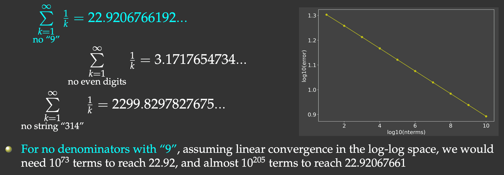

Part 1: towards high-performance Python
Start on November 20th, continue on November 27th, 10:00am–12:00pm Pacific Time
Abstract: Python has become the dominant language in scientific computing thanks to its high-level syntax, extensive ecosystem, and ease of use. However, its performance often lags behind traditional compiled languages like C, C++, and Fortran, as well as newer contenders like Julia and Chapel. This course is designed to help you speed up your Python workflows using a variety of tools and techniques.
We’ll begin with classic optimization methods such as NumPy-based vectorization, and explore just-in-time compilation using Numba, along with performance profiling techniques. From there, we’ll delve into parallelization – starting with multithreading using external libraries like NumExpr and Python 3.13’s new free-threading capabilities – but placing greater emphasis on multiprocessing.
Next, we’ll dive into Ray, a powerful and flexible framework for scaling Python applications. While Ray is widely used in AI, our focus will be on its core capabilities for distributed computing and data processing. You’ll learn how to parallelize CPU-bound numerical workflows – with and without reduction – as well as optimize I/O-bound tasks. We’ll also explore combining Ray with Numba and will discuss coding tightly coupled parallel problems.
Please note: this course does not cover GPU computing (which merits its own course), nor will we dive into mpi4py, the standard MPI library for Python.
In these notes all timings are for a 2021 Macbook Pro equipped with the M1 Pro chip and 16 GB of memory. On other machines, including our current training cluster, the timings will be different. They can also vary quite a bit from one training cluster to another, depending on the virtual machine (VM) flavours and the underlying physical cores allocated to run these VMs. What’s important is the relative timing of one code vs. another when run on the same machine under the same conditions.
Installation
Today we’ll be running Python on the training cluster. If instead you want to run everything locally on your computer, you can install Python and the libraries, but the installation instructions will vary depending on how you typically install Python, and whether/how you use Python virtual environments. Here is what I did on my computer (with uv installed earlier):
uv venv ~/env-hpc --python 3.12 # create a new virtual environment
source ~/env-hpc/bin/activate
uv pip install numpy
uv pip install --upgrade "ray[default]"
uv pip install --upgrade "ray[data]"
uv pip install tqdm netcdf4 scipy numexpr psutil multiprocess numba scalene Pillow
uv pip list # show installed packages
...
deactivateOn a production HPC cluster:
Don’t do this on the training cluster: I already installed all these packages centrally for all users.
module load python/3.12.4 arrow/19.0.1 scipy-stack/2025a netcdf/4.9.2
virtualenv --no-download env-hpc
source env-hpc/bin/activate
pip install --no-index --upgrade pip
pip install --no-index numba multiprocess numexpr
avail_wheels "ray"
pip install --no-index ray tqdm scalene grpcio
pip install modin
...
deactivateIntroduction
| Python pros | Python cons |
|---|---|
| elegant scripting language | slow (interpreted, dynamically typed) |
| easy/fast to develop and read code | uses indentation for code blocks |
| powerful, compact constructs for many tasks | |
| huge number of external libraries | |
| very popular across all fields |
- translation to machine code happens line-by-line
- no cross-line optimization
- since Python’s data collections can be very diverse, types are part of the data ⇒ significant overhead
- automatic memory management: on-the-fly reference counting, garbage collection, range checking ⇒ slow
All these high-level features make Python slow. In this course we will concentrate on getting the most performance out of it using various technologies.

Python setup in our course
Today we’ll be running Python inside a shell on our training cluster python.vastcloud.org. Let’s log in now!
We have pre-installed all the required libraries for you in a virtual Python environment in /project/def-sponsor00/shared/env-hpc that everyone on the system can read.
Once on the system, our workflow is going to be:
mkdir -p ~/tmp && cd ~/tmp
module load python/3.12.4 arrow/19.0.1 scipy-stack/2025a netcdf/4.9.2
source /project/def-sponsor00/shared/env-hpc/bin/activate
# our default mode
salloc --time=2:00:0 --mem-per-cpu=3600
...
exit
# more memory needed for several serial examples
salloc --time=2:00:0 --mem-per-cpu=12000
...
exit
# sometimes we'll use 4 cores
salloc --cpus-per-task=4 --time=2:00:0 --mem-per-cpu=3600
...
exit
# very similar
salloc --ntasks=4 --nodes=1 --time=2:00:0 --mem-per-cpu=3600
...
exit
# might run across multiple nodes
salloc --ntasks=4 --time=2:00:0 --mem-per-cpu=3600
...
exit
deactivatePlease do not run Python on the login node, as it’ll make the login node slow for everyone and might potentially crash it.
Finally, to monitor CPU usage inside a Slurm job, run the following from the login node (this will connect to the running job and launch htop inside it):
srun --jobid=<jobID> --pty htop -u $USER -s PERCENT_CPU --filter "python"Inside htop you can repeatedly press “Shift+H” to show individual threads or group them inside their parent processes.
Slow series
When I teach parallel computing in other languages (Julia, Chapel), the approach is to take a numerical problem and parallelize it using multiple processors, and concentrate on various issues and bottlenecks (variable locks, load balancing, false sharing, messaging overheads, etc.) that lead to less than 100% parallel efficiency. For the numerical problem I usually select something that is very simple to code, yet forces the machine to do brute-force calculation that cannot be easily optimized.
One such problem is a slow series. It is a well-known fact that the harmonic series \(\sum\limits_{k=1}^\infty{1\over k}\) diverges. It turns out that if we omit the terms whose denominators in decimal notation contain any digit or string of digits, it converges, albeit very slowly (Schmelzer & Baillie 2008), e.g.

But this slow convergence is actually good for us: our answer will be bounded by the exact result (22.9206766192…) on the upper side, and we will force the computer to do CPU-intensive work. We will sum all the terms whose denominators do not contain the digit “9”, and evaluate the first \(10^8\) terms.
I implemented and timed this problem running in serial in Julia (356ms) and Chapel (300ms) – both are compiled languages. Here is one possible Python implementation:
from time import time
def slow(n: int):
total = 0
for i in range(1,n+1):
if not "9" in str(i):
total += 1.0 / i
return total
start = time()
total = slow(100_000_000)
end = time()
print("Time in seconds:", round(end-start,3))
print(total)Let’s save this code inside the file slowSeries.py and run it. Depending on the power supplied to my laptop’s CPU (which I find varies quite a bit depending on the environment), I get the average runtime of 6.625 seconds. That’s ~20X slower than in Julia and Chapel!
Note that for other problems you will likely see an even bigger (100-200X) gap between Python and the compiled languages. In other languages looking for a substring in a decimal representation of a number takes a while, and there you will want to code this calculation using integer numbers. If we also do this via integer operations in Python:
def digitsin(num: int):
base = 10
while 9//base > 0: base *= 10
while num > 0:
if num%base == 9: return True
num = num//10
return False
def slow(n: int):
total = 0
for i in range(1,n+1):
if not digitsin(i):
total += 1.0 / i
return totalour code will be ~3-4X slower, so we will use the first version of the code with if not "9" in str(i) – it turns out that in this particular case Python’s high-level substring search is actually quite well optimized!
Looking at other problems, you will see that Python’s performance is worse on “tightly coupled” calculations on fundamental data types (integers, doubles), e.g. when you try to run the same arithmetic calculation on many elements of an array which is often the case in numerical simulation.
On the other hand, Python performs much better (or “less worse” compared to other languages) when doing file I/O and text processing. In addition, if your Python code spends most of its time in a compiled numerical library (often written in C or C++, and more recently in languages like Rust), your overall performance might be not that bad.
We will come back to the slow-series problem, but let’s first take a look at speeding up Python with NumPy.
NumPy vectorization
Python is dynamically typed, i.e. variables can change their type on the fly:
a = 5
a = 'apple'
print(a)This makes Python very flexible. Out of these variables you can form 1D lists, and these can be inhomogeneous and can change values and types on the fly:
a = [1, 2, 'Vancouver', ['Earth', 'Moon'], {'list': 'an ordered collection of values'}]
a[1] = 'Sun'
aPython lists are very general and flexible, which is great for high-level programming, but it comes at a cost. The Python interpreter can’t make any assumptions about what will come next in a list, so it treats everything as a generic object with its own type and size. As lists get longer, eventually performance takes a hit.
Python does not have any mechanism for a uniform/homogeneous list, where – to jump to element #1000 – you just take the memory address of the very first element and then increment it by (element size in bytes) x 999. NumPy library fills this gap by adding the concept of homogenous collections to python – numpy.ndarrays – which are multidimensional, homogeneous arrays of fixed-size items (most commonly numbers).
- This brings large performance benefits!
- no reading of extra bits (type, size, reference count)
- no type checking
- contiguous allocation in memory
- NumPy was written in C ⇒ pre-compiled
- NumPy lets you work with mathematical arrays.
Lists and NumPy arrays behave very differently:
a = [1, 2, 3, 4]
b = [5, 6, 7, 8]
a + b # this will concatenate two lists: [1,2,3,4,5,6,7,8]import numpy as np
na = np.array([1, 2, 3, 4])
nb = np.array([5, 6, 7, 8])
na + nb # this will sum two vectors element-wise: array([6,8,10,12])
na * nb # element-wise productVectorized functions on array elements
One of the big reasons for using NumPy is so you can do fast numerical operations on a large number of elements. The result is another ndarray. In many calculations you can use replace the usual for/while loops with functions on NumPy elements.
a = np.arange(100)
a**2 # each element is a square of the corresponding element of a
np.log10(a+1) # apply this operation to each element
(a**2+a)/(a+1) # the result should effectively be a floating-version copy of a
np.arange(10) / np.arange(1,11) # this is np.array([ 0/1, 1/2, 2/3, 3/4, ..., 9/10 ])Array broadcasting
An extremely useful feature of vectorized functions is their ability to operate between arrays of different sizes and shapes, a set of operations known as broadcasting.
a = np.array([0, 1, 2]) # 1D array
b = np.ones((3,3)) # 2D array
a + b # `a` is stretched/broadcast across the 2nd dimension before addition;
# effectively we add `a` to each row of `b`In the following example both arrays are broadcast from 1D to 2D to match the shape of the other:
a = np.arange(3) # 1D row; a.shape is (3,)
b = np.arange(3).reshape((3,1)) # effectively 1D column; b.shape is (3, 1)
a + b # the result is a 2D array!NumPy’s broadcast rules are:
- the shape of an array with fewer dimensions is padded with 1’s on the left
- any array with shape equal to 1 in that dimension is stretched to match the other array’s shape
- if in any dimension the sizes disagree and neither is equal to 1, an error is raised
First example above:
********************
a: (3,) -> (1,3) -> (3,3)
b: (3,3) -> (3,3) -> (3,3)
-> (3,3)
Second example above:
*********************
a: (3,) -> (1,3) -> (3,3)
b: (3,1) -> (3,1) -> (3,3)
-> (3,3)
Example 3:
**********
a: (2,3) -> (2,3) -> (2,3)
b: (3,) -> (1,3) -> (2,3)
-> (2,3)
Example 4:
**********
a: (3,2) -> (3,2) -> (3,2)
b: (3,) -> (1,3) -> (3,3)
-> error
"ValueError: operands could not be broadcast together with shapes (3,2) (3,)"Let’s see how these rules work on a real-life problem!
Converting velocity components
Consider a spherical dataset describing Earth’s mantle convection, defined on a spherical grid \(n_{lat}\times n_{lon}\times n_r = 500\times 800\times 300\), with the total of \(120\times10^6\) grid points. For each grid point, we need to convert from the spherical (lateral - longitudinal - radial) velocity components to their Cartesian equivalents.
To run all code fragments in this example at full \(500\times 800\times 300\) resolution, you will need to increase your memory ask to ~12000M, or otherwise your Python session will be killed mid-way. Alternatively, you can reduce the problem size by 4X (yielding much less impressive runtime difference) and continue running with 3600M memory:
nlat, nlon = nlat//2, nlon//2 # 30e6 grid pointsLet’s initialize our problem:
import numpy as np
from scipy.special import lpmv
import time
nlat, nlon, nr = 500, 800, 300 # 120e6 grid points
nlat, nlon = nlat//2, nlon//2 # 30e6 grid points
latitude = np.linspace(-90, 90, nlat)
longitude = np.linspace(0, 360, nlon)
radius = np.linspace(3485, 6371, nr)
# spherical velocity components: use Legendre Polynomials to set values
vlat = lpmv(0,3,latitude/90).reshape(nlat,1,1) + np.linspace(0,0,nr).reshape(nr,1) + np.linspace(0,0,nlon)
vlon = np.linspace(0,0,nlat).reshape(nlat,1,1) + np.linspace(0,0,nr).reshape(nr,1) + lpmv(0,2,longitude/180-1.)
vrad = np.linspace(0,0,nlat).reshape(nlat,1,1) + lpmv(0,3,(radius-4928)/1443).reshape(nr,1) + np.linspace(0,0,nlon)
# Cartesian velocity components
vx = np.zeros((nlat,nr,nlon))
vy = np.zeros((nlat,nr,nlon))
vz = np.zeros((nlat,nr,nlon))We need to go through all grid points, and at each point perform a matrix-vector multiplication. Here is our first attempt:
You might want to use Python’s tqdm library to provide a progress bar for real-time runtime estimate.
from tqdm import tqdm
start = time.time()
for i in tqdm(range(nlat)):
for k in range(nlon):
for j in range(nr):
vx[i,j,k] = - np.sin(np.radians(longitude[k]))*vlon[i,j,k] - \
np.sin(np.radians(latitude[i]))*np.cos(np.radians(longitude[k]))*vlat[i,j,k] + \
np.cos(np.radians(latitude[i]))*np.cos(np.radians(longitude[k]))*vrad[i,j,k]
vy[i,j,k] = np.cos(np.radians(longitude[k]))*vlon[i,j,k] - \
np.sin(np.radians(latitude[i]))*np.sin(np.radians(longitude[k]))*vlat[i,j,k] + \
np.cos(np.radians(latitude[i]))*np.sin(np.radians(longitude[k]))*vrad[i,j,k]
vz[i,j,k] = np.cos(np.radians(latitude[i]))*vlat[i,j,k] + \
np.sin(np.radians(latitude[i]))*vrad[i,j,k]
end = time.time()
print("Time in seconds:", round(end-start,3))On my laptop this calculation took 1280s. There are quite a lot of redundancies (repeated calculations), e.g. we compute all angles to radians multiple times, compute \(\sin\) and \(\cos\) of the same latitude and longitude multiple times, and so on. Getting rid of these redundancies:
from tqdm import tqdm
start = time.time()
for i in tqdm(range(nlat)):
lat = np.radians(latitude[i])
sinlat = np.sin(lat)
coslat = np.cos(lat)
for k in range(nlon):
lon = np.radians(longitude[k])
sinlon = np.sin(lon)
coslon = np.cos(lon)
for j in range(nr):
vx[i,j,k] = - sinlon*vlon[i,j,k] - sinlat*coslon*vlat[i,j,k] + coslat*coslon*vrad[i,j,k]
vy[i,j,k] = coslon*vlon[i,j,k] - sinlat*sinlon*vlat[i,j,k] + coslat*sinlon*vrad[i,j,k]
vz[i,j,k] = coslat*vlat[i,j,k] + sinlat*vrad[i,j,k]
end = time.time()
print("Time in seconds:", round(end-start,3))brings the runtime down to 192s.
Does using NumPy’s matrix-vector multiplication function np.dot speed this calculation? In this workflow, at each latitude-longitude you would define a rotation matrix and at each point a spherical velocity vector to compute their dot product, i.e. you would replace this fragment:
for j in range(nr):
vx[i,j,k] = - sinlon*vlon[i,j,k] - sinlat*coslon*vlat[i,j,k] + coslat*coslon*vrad[i,j,k]
vy[i,j,k] = coslon*vlon[i,j,k] - sinlat*sinlon*vlat[i,j,k] + coslat*sinlon*vrad[i,j,k]
vz[i,j,k] = coslat*vlat[i,j,k] + sinlat*vrad[i,j,k]with this one:
rot = np.array([[-sinlon, -sinlat*coslon, coslat*coslon],
[coslon, -sinlat*sinlon, coslat*sinlon],
[0, coslat, sinlat]])
for j in range(nr):
vspherical = np.array([vlon[i,j,k], vlat[i,j,k], vrad[i,j,k]])
vx[i,j,k], vy[i,j,k], vz[i,j,k] = np.dot(rot, vspherical)To speed up our computation, we should vectorize over one of the dimensions, e.g. longitudes:
from tqdm import tqdm
start = time.time()
lon = np.radians(longitude[0:nlon])
sinlon = np.sin(lon)
coslon = np.cos(lon)
for i in tqdm(range(nlat)):
lat = np.radians(latitude[i])
sinlat = np.sin(lat)
coslat = np.cos(lat)
for j in range(nr):
vx[i,j,0:nlon] = - sinlon*vlon[i,j,0:nlon] - sinlat*coslon*vlat[i,j,0:nlon] + coslat*coslon*vrad[i,j,0:nlon]
vy[i,j,0:nlon] = coslon*vlon[i,j,0:nlon] - sinlat*sinlon*vlat[i,j,0:nlon] + coslat*sinlon*vrad[i,j,0:nlon]
vz[i,j,0:nlon] = coslat*vlat[i,j,0:nlon] + sinlat*vrad[i,j,0:nlon]
end = time.time()
print("Time in seconds:", round(end-start,3))Let’s see how broadcasting works in here. Consider the dimensions of all variables in the expression for computing vx[i,j,0:nlon]:
[1,1,nlon] = - [nlon]*[1,1,nlon] - [1]*[nlon]*[1,1,nlon] + [1]*[nlon]*[1,1,nlon]Omitting scalars ([1]), padding with 1’s on the left will produce:
[1,1,nlon] = - [1,1,nlon]*[1,1,nlon] - [1,1,nlon]*[1,1,nlon] + [1,1,nlon]*[1,1,nlon]Now all variables have the same dimensions, and all operations will be element-wise. The calculation time is now 3.503s, which is a huge improvement!
Vectorizing over two dimensions, e.g. over radii and longitudes leaves us with a single loop:
from tqdm import tqdm
start = time.time()
lon = np.radians(longitude[0:nlon])
sinlon = np.sin(lon)
coslon = np.cos(lon)
for i in tqdm(range(nlat)):
lat = np.radians(latitude[i])
sinlat = np.sin(lat)
coslat = np.cos(lat)
vx[i,0:nr,0:nlon] = - sinlon*vlon[i,0:nr,0:nlon] - sinlat*coslon*vlat[i,0:nr,0:nlon] + coslat*coslon*vrad[i,0:nr,0:nlon]
vy[i,0:nr,0:nlon] = coslon*vlon[i,0:nr,0:nlon] - sinlat*sinlon*vlat[i,0:nr,0:nlon] + coslat*sinlon*vrad[i,0:nr,0:nlon]
vz[i,0:nr,0:nlon] = coslat*vlat[i,0:nr,0:nlon] + sinlat*vrad[i,0:nr,0:nlon]
end = time.time()
print("Time in seconds:", round(end-start,3))Let’s check broadcasting, taking the expression for computing vx[i,0:nr,0:nlon] and omitting scalars ([1]):
[1,nr,nlon] = - [nlon]*[1,nr,nlon] - [1]*[nlon]*[1,nr,nlon] + [1]*[nlon]*[1,nr,nlon] # original dimensions
[1,nr,nlon] = - [1,1,nlon]*[1,nr,nlon] - [1,1,nlon]*[1,nr,nlon] + [1,1,nlon]*[1,nr,nlon] # after padding with 1's on the left
[1,nr,nlon] = - [1,nr,nlon]*[1,nr,nlon] - [1,nr,nlon]*[1,nr,nlon] + [1,nr,nlon]*[1,nr,nlon] # after stretching 1'sNow all variables have the same dimensions, and all operations will be element-wise. The calculation time goes down to 1.487s.
You can also vectorize in all three dimensions (latitudes, radii and longitudes), resulting in no explicit Python loops in your calculation at all, but this requires a little bit of extra work, and the computation time will actually slightly go up – any idea why?
In the end, with NumPy’s element-wise vectorized operations, we improved our time from 1280s to 1.5s! The entire calculation was done as a batch in a compiled C code, instead of cycling through individual elements and then calling a compiled C code on each. There are a lot fewer Python code lines to interpret and run.
Back to the slow series
Let’s use NumPy for our slow series calculation. We will:
- write a function that acts on each integer \(k\) in the series,
- convert this function to a vectorized function that takes in an array of integer numbers and returns an array of summation terms,
- sum these terms to get the result.
Let’s save the following code as slow2.py:
from time import time
import numpy as np
n = 100_000_000
def combined(k):
if "9" not in str(k):
return 1.0/k
else:
return 0.0
v3 = np.vectorize(combined)
start = time()
i = np.arange(1,n+1)
total = np.sum(v3(i))
end = time()
print("Time in seconds:", round(end-start,3))
print(total)This particular code uses a lot of memory, but you have 2 options:
- restart the job with
--mem-per-cpu=14400request (and single core) – probably not a good idea in a shared environment - reduce
nby 10X and then scale the time estimate by 10X – easy and will give a rough estimate, but the summation time does not scale exactly linearly with the number of terms (larger numbers have a higher probability of having 9’s in them) - break one large numpy array into pieces, as shown in the code below
from time import time
import numpy as np
n = 100_000_000
def combined(k):
if "9" not in str(k):
return 1.0/k
else:
return 0.0
size = n//10 # 10 pieces: 1-10e6, 10,000,001-20e6, ..., 90,000,001-100e6
intervals = [(i*size+1,(i+1)*size) for i in range(10)]
if n > intervals[-1][1]:
intervals[-1] = (intervals[-1][0], n)
v3 = np.vectorize(combined)
start = time()
total = 0
for span in intervals:
i = np.arange(span[0],span[1]+1)
total += np.sum(v3(i))
end = time()
print("Time in seconds:", round(end-start,3))
print(total)The vectorized function is supposed to speed up calculating the terms, but our time becomes significantly worse (14.72s) than the original calculation (6.625s). The reason: we are no longer replacing multiple Python lines with a single line. The code inside combined() is still native Python code that is being interpreted on the fly, and we applying all its lines to each element of array i.
The function np.vectorize does not compile combined() – it simply adapts it to work with arrays, but underneath you are still running Python loops. If, instead, our vectorization could produce a compiled function that takes an array of integers and computes the slow series sum all inside the same C/C++/Fortran/Rust function, it would run ~20X faster than the original calculation. This is what a JIT compiler can do – we will study it later.
As it turns out, to speed up this problem with NumPy, you really need to perform the check for digit “9” via low-level custom NumPy code with a combination of vectorizable integer and floating operations, and this is very difficult – but not impossible – to implement.
Parallelization
We can only start parallelizing the code when we are certain that our serial performance is not too bad, or at the very least we have optimized our serial Python code as much as possible. At this point, we don’t know if we have the best optimized Python code, as we are only starting to look into various tools that (hopefully) could speed up our code. We know that our code is ~20X slower than a compiled code in Julia/Chapel/C/Fortran, but do we have the best-performing Python code?
Next we’ll try to speed up our code with NumExpr expression evaluator, in which simple mathematical / NumPy expressions can be parsed and then evaluated using compiled C code. NumExpr has an added benefit in that you can do this evaluation with multiple threads in parallel. But first we should talk about threads and processes.
Threads vs processes
In Unix a process is the smallest independent unit of processing, with its own memory space – think of an instance of a running application. The operating system tries its best to isolate processes so that a problem with one process doesn’t corrupt or cause havoc with another process. Context switching between processes is relatively expensive.
A process can contain multiple threads, each running on its own CPU core (parallel execution), or sharing CPU cores if there are too few CPU cores relative to the number of threads (parallel + concurrent execution). All threads in a Unix process share the virtual memory address space of that process, e.g. several threads can update the same variable, whether it is safe to do so or not (we’ll talk about thread-safe programming in this course). Context switching between threads of the same process is less expensive.
- Threads within a process communicate via shared memory, so multi-threading is always limited to shared memory within one node.
- Processes communicate via messages (over the cluster interconnect or via shared memory). Multi-processing can be in shared memory (one node, multiple CPU cores) or distributed memory (multiple cluster nodes). With multi-processing there is no scaling limitation, but traditionally it has been more difficult to write code for distributed-memory systems. Various libraries tries to simplify it with high-level abstractions.
Discussion
What are the benefits of each type of parallelism: multi-threading vs. multi-processing? Consider: 1. context switching, e.g. starting and terminating or concurrent execution on the same CPU core, 1. communication, 1. scaling up.
Multithreading
Python uses reference counting for memory management. Each object in memory that you create in Python has a counter storing the number of references to that object. Once this counter reaches zero (when you delete objects), Python releases memory occupied by the object. If you have multiple threads, letting them modify the same counter at the same time can lead to a race condition where you can write an incorrect value to the counter, leading to either memory leaks (too much memory allocated) or to releasing memory incorrectly when a there is still a reference to that object on another thread.
One way to solve this problem is to have locks on all shared data structures, where only one thread at a time can modify data. This can also lead to problems, and Python’s solution prior to version 3.13 is to use a lock on the interpreter itself (Global Interpreter Lock = GIL), so that only one thread can run at a time. Recall that in Python each line of code is being interpreted on the fly, so placing a lock on the interpreter means pausing code execution while some other thread is running.
Installing free-threaded Python
Starting with v3.13, you can install Python with the GIL removed. This mode called free threading is still considered experimental and is usually not enabled by default. There is a good Real Python article (might require subscription) describing various build options to enable free threading including enabling experimental JIT. Here is a simple setup on my laptop:
uv venv ~/env-free --python 3.14t # create a new virtual environment
source ~/env-free/bin/activate
...
deactivateAt the time of this writing, there is no free-threaded Python module on the clusters. Therefore, on the training cluster I used uv to install free-threaded Python 3.14t into a world-readable subdirectory in /project/def-sponsor00/shared:
uv is currently not supported on our clusters so use it with caution.
curl -LsSf https://astral.sh/uv/install.sh | sh # install uv
# make sure ~/.local/bin is in your path (the location of `uv` binary)
uv venv /project/def-sponsor00/shared/env-free --python 3.14t # create a new virtual environment
source /project/def-sponsor00/shared/env-free/bin/activate
...
which python # /project/def-sponsor00/shared/env-free/bin/python
ls -l $(which python) n # symbolic link to ~user01/.local/share/uv/python/...
deactivate
countfiles /project/def-sponsor00/shared/env-free # 15 files
countfiles ~/.local/share/uv/python # 5,508 filesRunning free-threaded Python
Python has several multithreading modules/libraries in its Standard Library. For example, threading library provides a function Thread() to launch new threads. Here, instead, I will use concurrent library for launching threads and threading library for printing thread IDs:
import concurrent.futures as ft
import threading as t
t.current_thread().name # 'MainThread'
def worker(x):
print(t.current_thread().name)
with ft.ThreadPoolExecutor() as pool:
results = pool.map(worker, range(30)) # in the output 'ThreadPoolExecutor-0_1":
# 0 is the pool number
# 1 is the thread numberIn this simple code above we’ll see output mostly from threads 0, 1, maybe 2, as they are not very busy.
Here is a full example of the slow series calculation (store it as sum.py) with native multithreading:
from time import time
import argparse
import concurrent.futures as ft
import threading as t
parser = argparse.ArgumentParser()
parser.add_argument('--n', default=100_000_000, type=int, help='number of terms')
parser.add_argument('--nthreads', default=1, type=int, help='number of tasks')
args = parser.parse_args()
n, nthreads = args.n, args.nthreads
def slow(interval):
print(t.current_thread().name)
total = 0
for i in range(interval[0], interval[1]+1):
if not "9" in str(i):
total += 1.0 / i
return total
size = n//nthreads # size of each batch
intervals = [(i*size+1,(i+1)*size) for i in range(nthreads)]
if n > intervals[-1][1]: intervals[-1] = (intervals[-1][0], n) # add the remainder, if any
print("running with", args.nthreads, "threads over", intervals)
start = time()
with ft.ThreadPoolExecutor() as pool:
results = pool.map(slow, intervals)
end = time()
print("Time in seconds:", round(end-start,3))
print("sum =", sum(r for r in results))If you run this code with v3.12 or earlier, you will get about the same runtime independently of the number of threads, as – due to the GIL – these threads will be taking turns running. With a free-threaded Python 3.14 build, you will see better runtimes with additional threads, provided you have the CPU cores to run all threads in parallel:
cd ~/tmp
source /project/def-sponsor00/shared/env-free/bin/activate
salloc --cpus-per-task=4 --time=0:60:0 --mem-per-cpu=3600
python sum.py
python sum.py --nthreads=2
python sum.py --nthreads=4
python sum.py --nthreads=8 # do we get further 2X speedup?running with 1 threads over [(1, 100000000)]
Time in seconds: 7.331
sum = 13.277605949858103running with 2 threads over [(1, 50000000), (50000001, 100000000)]
Time in seconds: 3.801
sum = 13.277605949855722running with 4 threads over [(1, 25000000), (25000001, 50000000),
(50000001, 75000000), (75000001, 100000000)]
Time in seconds: 2.977
sum = 13.277605949854326Note that the free-threaded build has some additional overhead when executing Python code compared to the default GIL-enabled build. In 3.13, this overhead is ~40%, in 3.14 seems to be somewhat smaller.
NumExpr with regular Python
Alternatively, you can do multithreading in Python via 3rd-party libraries that were written in other languages in which there is no GIL. One such famous library is NumExpr which is essentially a compiler for NumPy operations. It takes its input NumPy expression as a string and can run it with multiple threads.
- supported operators: - + - * / % << >> < <= == != >= > & | ~ **
- supported functions: where, sin, cos, tan, arcsin, arccos arctan, arctan2, sinh, cosh, tanh, arcsinh, arccosh arctanh, log, log10, log1p, exp, expm1, sqrt, abs, conj, real, imag, complex, contains
- supported reductions: sum, product
- supported data types: 8-bit boolean, 32-bit signed integer (int or int32), 64-bit signed integer (long or int64), 32-bit single-precision floating point number (float or float32), 64-bit double-precision floating point number (double or float64), 2x64-bit double-precision complex number (complex or complex128), raw string of bytes
Here is a very simple NumPy example, timing only the calculation itself:
from time import time
import numpy as np
n = 100_000_000
a = np.random.rand(n)
start = time()
b = np.sin(2*np.pi*a)**2 + np.cos(2*np.pi*a)**2
end = time()
print("Time in seconds:", round(end-start,3))
print(a,b)I get the average runtime of 2.04s. Here is how you would implement this with NumExpr:
from time import time
import numpy as np, numexpr as ne
n = 100_000_000
a = np.random.rand(n)
prev = ne.set_num_threads(1) # specify the number of threads, returns the previous setting
print(prev) # on first use tries to grab all cores
start = time()
twoPi = 2*np.pi
b = ne.evaluate('sin(twoPi*a)**2 + cos(twoPi*a)**2')
end = time()
print("Time in seconds:", round(end-start,3))
print(a,b)Average time:
| ncores | 1 | 2 | 4 | 8 |
| wallclock runtime (sec) | 1.738 | 0.898 | 0.478 | 0.305 |
How would we implement the slow series with NumExpr? We need a mechanism to check if a substring is present in a string:
import numpy as np, numexpr as ne
x = np.array([b'hi', b'there']) # an array of byte strings (stored as an array of ASCII codes)
x.dtype # each element is a 5-element string
x.nbytes # 10 bytes in total, i.e. 1 byte per ASCII character
ne.evaluate("contains(x, b'hi')") # returns array([True, False])
ne.evaluate("contains(x, b'h')") # returns array([True, True])
ne.evaluate("~contains(x, b'h')") # not contains => returns array([False, False])We can use NumExpr to parallelize checking for substrings (store this as slow3.py):
This code will use more than 3600M memory. Use --cpus-per-task=4 --mem-per-cpu=3600 giving you the total memory of 14,400MB shared between the 4 cores, especially that we’ll need several cores now for multithreading.
from time import time
import numpy as np, numexpr as ne
n = 100_000_000
ne.set_num_threads(1) # set the number of threads
start = time()
i = np.arange(1,n+1) # array of integers
j = i.astype(np.bytes_) # convert to byte strings
mask = ne.evaluate("~contains(j, '9')") # parallel part; returns an array of True/False
nonZeroTerms = i[mask]
inverse = np.vectorize(lambda x: 1.0/x)
total = sum(inverse(nonZeroTerms))
end = time()
print("Time in seconds:", round(end-start,3))
print(total)Here are the average (over three runs) times:
| ncores | 1 | 2 | 4 |
| wallclock runtime (sec) | 18.427 | 17.375 | 17.029 |
Clearly, we are bottlenecked by the serial part of the code. Let’s use another NumExpr call to evaluate 1.0/x – store this as updated slow4.py:
< inverse = np.vectorize(lambda x: 1.0/x)
< total = sum(inverse(nonZeroTerms))
---
> total = np.sum(ne.evaluate("1.0/nonZeroTerms"))Here are the improved times:
| ncores | 1 | 2 | 4 | 8 |
| wallclock runtime (sec) | 12.094 | 11.304 | 10.965 | 10.83 |
Obviously, we still have some bottlenecks: look at the scaling, and recall the original serial runtime 6.625s on which we are trying to improve. How do we find these? Let’s use a profiler!
Profiling and performance tuning
Since we are talking about bottlenecks, now is a good time to look into profilers. There are several good open-source profilers for Python codes, e.g. cProfile, line_profiler, Scalene, Pyinstrument, Linux’s perf profiler, and few others.
In our last code we had a sequential workflow with multiple lines, so let’s measure its performance line by line using Scalene profiler. It tracks both CPU and memory usage (and more recently GPU), it is fast and very easy to use:
scalene slow4.py # on your own computer, will open result in a browser
scalene --cli slow4.py # on a remote systemNote: to run scalene --cli slow4.py on the training cluster, you might need more memory, so I found it useful to request --mem-per-cpu=7200, or stay inside the multi-core parallel job (4 cores, 3600MB each).
If running on your computer, this will open the result in a browser:
As you can see, our actual computing is quite fast! ~67% of the time is taken by the line initializing an array of byte strings j = i.astype(np.bytes_), and the second biggest offender is initializing an array of integers.
If we could find a way to implement this initialization in NumExpr, we could vastly improve our code’s performance. I have not found a way to do this quickly and elegantly in NumExpr (very marginal improvement with j = i.astype(dtype='S9')), but perhaps there is a solution?
I will leave it as a take-home exercise, and please let me know if you find a solution!
Multiprocessing
With multiprocessing you can launch multiple processes and run each process on a separate CPU core. Each process will have its own interpreter with its own GIL and memory space, and – unlike with multithreading – they can all run at the same time in parallel.
Python has the multiprocessing module as part of its Standard Library. Unfortunately, it has some limitations: (1) it only accepts certain Python functions, and (2) it cannot handle a lot of different types of Python objects. This is due to the way Python serializes (packs) data and sends it to the other processes.
Fortunately, there is a fork of the multiprocessing module called multiprocess (https://pypi.org/project/multiprocess) that solves most of these problems by using a different serialization mechanism. The way you use it is identical to multiprocessing, so it should be straightforward to convert your code between the two.
Consider Python’s serial map() function:
help(map)
r = map(lambda x: x**2, [1,2,3])
list(r)We can write a Python function to sleep for 1 second, and run it 10 times with serial map():
import time
start = time.time()
r = list(map(lambda x: time.sleep(1), range(10))) # use 0, 1, ..., 9 as arguments to the lambda function
end = time.time()
print("Time in seconds:", round(end-start,3))This takes 10.045s as expected.
At this point we need to restart our job on 4 cores:
salloc --time=2:00:0 --ntasks=4 --mem-per-cpu=3600Let’s parallelize it with multiprocess, creating a pool of workers and replacing serial map() with parallel pool.map():
Note: serial
map()returns an iterable, whereas parallelpool.map()already returns a list ⇒ no need to convert it to a list.
import time
from multiprocess import Pool
ncores = 4 # set it to the actual number of cores
print("Running on", ncores, "cores")
pool = Pool(ncores) # create a pool of workers
start = time.time()
r = pool.map(lambda x: time.sleep(1), range(10)) # use 0, 1, ..., 9 as arguments to the lambda function
pool.close() # turn off your parallel workers
end = time.time()
print("Time in seconds:", round(end-start,3))- On 4 cores this takes 3.005 seconds: running batches of 4 + 4 + 2 calls, i.e. in the 1st second we run four
sleep(1)calls in parallel, in the 2nd second we run another set of foursleep(1)calls, and the remaining two calls run during the 3rd second. - On 8 cores this takes 2.007 seconds: running batches of 8+2 calls.
- On 1 core it takes 10.013 seconds.
We are not doing real calculations here, just waiting for 1 wallclock time second in each call. If you attempt to run multiple processes (e.g. ncores = 4 in the code above) on 1 physical core, they will take turns running at the same time, but they will compare their time against the wallclock time (not CPU time), and all of them will finish running as if you had 4 physical cores.
How do we parallelize the slow series with parallel map()? One idea is to create a function to process each of the \(10^8\) terms and use map() to apply it to each term. Here is the serial version of this code:
from time import time
n = 100_000_000
def combined(k):
if "9" in str(k):
return 0.0
else:
return 1.0/k
start = time()
total = sum(map(combined, range(1,n+1))) # use 1,...,n as arguments to `combined` function
end = time()
print("Time in seconds:", round(end-start,3))
print(total)This takes 9.403 seconds.
With multiprocess we would be inclined to use sum(pool.map(combined, range(1,n+1)))). Unfortunately, pool.map() returns a list, and with \(10^8\) input integers it will return a \(10^8\)-element list, processing and summing which will take a long time … (85 seconds in my tests). Simply put, lists perform poorly in Python.
How do we speed it up?
Idea: Break down the problem into ncores partial sums, and do it each of them on a separate core.
Hint: Here is how this approach would work on two cores (not the full code):
def partial(interval):
return sum(map(combined, range(interval[0],interval[1]+1)))
pool = Pool(2)
total = pool.map(partial, [(1, n//2-1), (n//2,n)])
print(sum(total))Complete and run this code on two cores. Add timing.
Write a scalable version of this code and run it on an arbitrary number of cores (up to the maximum number of cores you can use). Use the following strategy to divide the workload:
ncores = ...
pool = Pool(ncores)
size = n // ncores
intervals = [(i*size+1,(i+1)*size) for i in range(ncores)]
if n > intervals[-1][1]:
intervals[-1] = (intervals[-1][0], n)Here is what I get for timing on my laptop and on the training cluster:
| ncores | 1 | 2 | 4 | 8 |
| laptop wallclock runtime (sec) | 8.294 | 4.324 | 2.200 | 1.408 |
--ntasks=4 cluster runtime (sec) |
17.557 | 8.780 | 4.499 | 4.508 |
Our parallel scaling looks great, but in terms of absolute numbers we are still lagging behind the same problem implemented with a serial code in compiled languages …
Numba JIT compiler
Hopefully, I have convinced you that – in order to get decent performance out of your Python code – you need to compile it with a proper compiler (and not just NumExpr). There are several Python compilers worth mentioning here:
- We have already looked at NumExpr (only takes simple expressions).
- Numba open-source just-in-time compiler that uses LLVM underneath, can also parallelize your code for multi-core CPUs and GPUs; often requires only minor code changes.
- Cython open-source compiled language is a superset of Python: Python-like code with Cython-specific extensions for C types.
- Codon is research project from MIT: not endorsing it, but it consistently comes up high in my search results, source code https://github.com/exaloop/codon and the related article https://bit.ly/3uUvTmd.
- New proprietary programming language https://www.modular.com/max/mojo is a superset of Python, with somewhat misleading (68,000X) speedup claims on their front page, documentation/examples/workshops at https://github.com/modularml/mojo.
Here we’ll take a look at Numba: - compiles selected blocks of Python code to machine code, - can process multi-dimensional arrays, - can do multithreading on multiple CPU cores (and we’ll later learn how to use it with multiprocessing), - can use GPUs (not covered here): you’d be writing CUDA kernels.
Let’s compute the following sum:
\[\sum_{i=1}^\infty\frac{\cos(i)}{i} = -\ln\left(2\sin0.5\right) \]
Here is the familiar serial implementation (let’s save it as trig.py):
from time import time
from math import cos, sin, log
def trig(n):
total = 0
for i in range(1,n+1):
total += cos(i)/i
return total
start = time()
total = trig(100_000_000)
end = time()
print("Time in seconds:", round(end-start,3))
print("approximate / exact =", -total/log(2*sin(0.5)))Our runtime is 7.493 seconds.
Let’s add the following Python decorator just before our function definition:
from numba import jit
@jit(nopython=True)
...The first time you use Numba in a code, it might be slow, but all subsequent uses will be fast: needs time to compile the code. Our runtime went down to 0.693 seconds – that’s more than a 10X speedup!
On the training cluster I see ~5X speedup.
There are two compilation modes in Numba: 1. object mode: generates a more stable, slower code 1. nopython mode: generates much faster code that requires knowledge of all types, has limitations that can force Numba to fall back to the object mode; the flag nopython=True enforces faster mode and raises an error in case of problems
Parallelizing
Let’s add parallel=True to our decorator and change range(1,n+1) to prange(1,n+1) - it’ll be subdividing loops into pieces to pass them to all available CPU cores via multithreading. On my 8-core laptop the runtime goes down to 0.341 seconds – a further ~2X improvement … This is not so impressive …
It turns out there is quite a bit of overhead with subdividing loops, starting/stopping threads and orchestrating everything. If instead of \(10^8\) we consider \(10^{10}\) terms, a single thread processes this in 57.890 seconds, whereas 8 threads take 10.125 seconds – factor of 5.7X speedup!
Back to the slow series
Let’s apply Numba to our slow series problem. Take the very first version of the code (6.625 seconds):
from time import time
def slow(n: int):
total = 0
for i in range(1,n+1):
if not "9" in str(i):
total += 1.0 / i
return total
start = time()
total = slow(100_000_000)
end = time()
print("Time in seconds:", round(end-start,3))
print(total)and add from numba import jit and @jit(nopython=True) to it. Turns out, when run in serial, our time improves only by ~10-20%. There is some compilation overhead, so for bigger problems you could gain few additional %.
As you can see, Numba is not a silver bullet when it comes to speeding up Python. It works great for many numerical problems including the trigonometric series above, but for problems with high-level Python abstractions – in our case the specific line if not "9" in str(i) – Numba does not perform very well.
Fast implementation
It turns out with Numba there is a way to make the slow series code almost as fast as with the compiled languages. Check out this implementation:
from time import time
from numba import jit
@jit(nopython=True)
def combined(k):
base, k0 = 10, k
while 9//base > 0: base *= 10
while k > 0:
if k%base == 9: return 0.0
k = k//10
return 1.0/k0
@jit(nopython=True)
def slow(n):
total = 0
for i in range(1,n+1):
total += combined(i)
return total
start = time()
total = slow(100_000_000)
end = time()
print("Time in seconds:", round(end-start,3))
print(total)It finishes in 0.601 seconds, i.e. ~10X faster than the first Numba implementation – any ideas why?
Parallelize this code with multiple threads and time it on several cores – does your time improve? (it should somewhat) Let’s fill this table together:
ncores 1 2 4
wallclock runtime (sec)
In Part 2 we will combine Numba with multiprocessing via Ray tasks – this approach can scale beyond a single node.
We covered a lot of material in this section! Let’s summarize the most important points. Which tool would you use, in what situation, and why?
- which of today’s tools let you do multithreading?
- which of today’s tools let you do multiprocessing?
- which Python compilers did we try?
Which tool would you use for your research problem and why? Are you ready to parallelize your workflow?